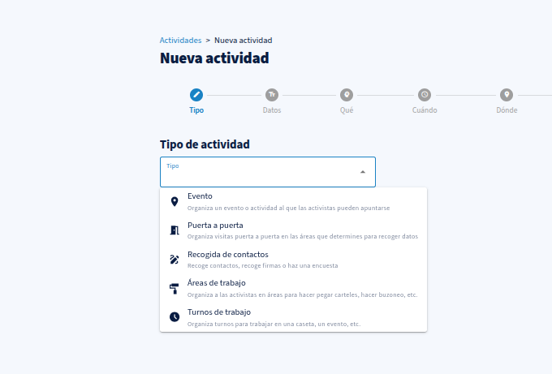
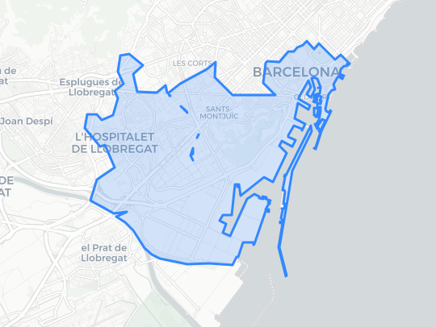
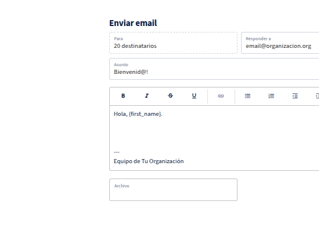
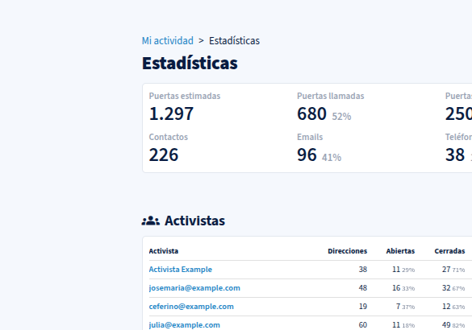
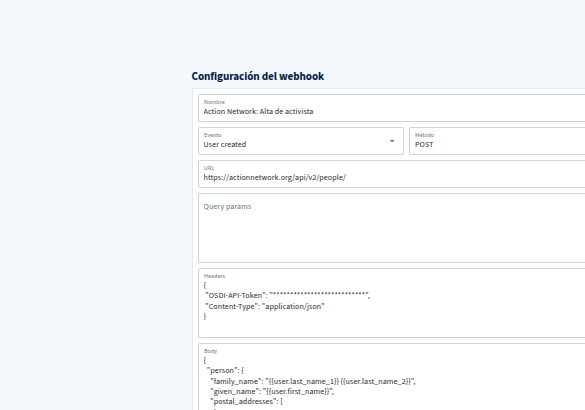
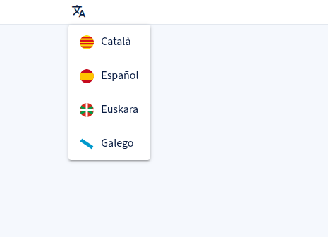

Actividades configurables
Configura distintos tipos de actividades: puerta a puerta, eventos, recogida de firmas, áreas de trabajo, turnos y más.
Organización de activistas
Creada por y para activistas, con todo lo necesario para organizar tus campañas y movilizar a tu gente.
Configura distintos tipos de actividades con una gestión avanzada de permisos adaptables a cada campaña.
Un censo único de activistas con permisos por territorio para cada equipo y organización.
Mide la actividad y participación de tus activistas para tomar mejores decisiones.
Funcionalidades
Coordina distintos tipos de actividades desde un único lugar. Gestiona permisos por territorio, envía comunicaciones y mide el impacto de cada acción.

Configura distintos tipos de actividades: puerta a puerta, eventos, recogida de firmas, áreas de trabajo, turnos y más.

Gestión centralizada de activistas y un sistema de permisos por territorio para cada organización y equipo.

Comunícate con tus activistas mediante envíos de email y notificaciones push segmentadas.

Consulta estadísticas de activistas y actividad para evaluar el alcance de cada campaña.

Conecta con otras plataformas mediante nuestra API y Webhooks para automatizar tus procesos.

Disponible en español, catalán, gallego y euskera, para llegar a todo tu territorio.
Cuéntanos tus necesidades y te mostramos cómo Activistas puede ayudarte.
Escríbenos